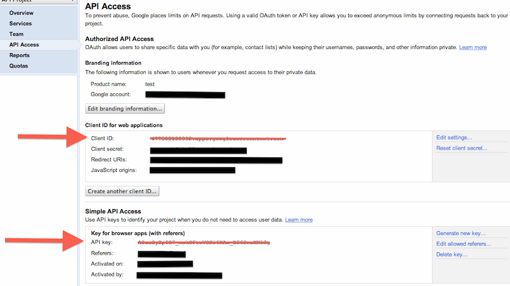

This library is designed to create an easier way to build a custom Google Analytics Dashboard by visualizing data from Google Analytics API with the Google Chart Tools
Before you begin, you must retrieve three pieces of information from your Google API account:
Follow these steps in gathering the required information.
Log into Google Analytics and select the profile you want to use. After logging in, there will be a profile ID at the end of the URL in the address bar after the 'p'. This is your profile ID. Example: p'XXXX'.

In your API Console navigate to the left panel to 'Services -> Analytics API' and switch service to 'ON'.

Navigate on the left panel to 'API Access'
If you have not already, set up a new client ID and type the URL of your website you will be using the library on.

Set the Javascript origins field to the domain this script will live on. Finally, locate your 'Client ID' and 'API Key'
Copy and paste the code below into the body tag of your HTML file.
<!-- Add Google Analytics authorization button --> <button id="authorize-button" style="visibility: hidden">Authorize Analytics</button> <!-- Load all Google JS libraries --> <script type="text/javascript" src="https://www.google.com/jsapi"></script> <script type="text/javascript" src="gadash-1.0.js"></script> <script src="https://apis.google.com/js/client.js?onload=gadashInit"></script>
The code above loads the Google AJAX library, the GADash 1.0 library, and the Google Javascript Client library. Also an authorization button is created to allow Analytics to be authenticated.
To query your Google Analytics data, Google requires a verified API Key and your Client ID. Therefore, this information must be supplied to the GADash library.
Copy and paste the following code snippet into your HTML file replacing the 'XXXX' with your API Key and Client ID you setup in the first step of this document from the Google API Console.
<script type="text/javascript"> // Configure gadash library with your own API Key and ClientID. // This can be obatained from your Google API Console. gadash.configKeys({ 'apiKey': 'XXXXXXXXXXXXXXXXXXXXXX', 'clientId':'XXXXXXXXXXXXXXXXXXXXXX' }); </script>
First, we must define a div element for the chart to be displayed in. Give the div an id attribute that you will pass as a parameter to the Chart object.
<div id='chart1'></div>
Second, we create a chart object using the following parameters and set its divContainer parameter to the div id you created above.
Here is an example of a simple chart configuration that creates a line chart for the number of visitors in the past 30 days. Note: Replace XXXX in 'id' with your Google Analytics profile id.
<script type="text/javascript"> var chart1 = new gadash.Chart({ 'type': 'LineChart', 'divContainer': 'chart1', 'last-n-days':30, 'query': { 'ids':'ga:XXXX', 'metrics': 'ga:visitors', 'dimensions': 'ga:date' } }).render(); </script>
Use the reference below to see what parameters are valid for a chart configuration.
| Name | Type | Description |
typeRequired |
String |
Specifies which type of chart instance to use from the Google Visualization's library. To use a chart, specify the object name of the chart from the visualization library. You can use any available chart the visualization library offers but these are the valid charts that have been tested:
Note: If Example: The following will declare a Line Chart from the Google Visualization library. 'type':'LineChart'
|
divContainerRequired |
String | Specifies which div element to display the chart in. Example: This example will draw the chart to <div id='chart1'></div>'divContainer':'chart1'
|
queryRequired |
Object |
Object that specifies a query object for Google Analytics Core Reporting a API. The query object must contain
following parameters: Note: If
For a list of all valid For more detailed information about the Example: The following query will return the number of visitors for each day from January 1, 2000 to January 31, 2000 query: { 'ids':'ga:1234', 'metrics': 'ga:visitors', 'start-date':'2000-01-01', 'end-date':'2000-01-30', 'dimensions': 'ga:date' } |
chartOptionsOptional |
Object |
Object that specifies chart options configuation parameters. This object must be configured based on the
Example: This example is to configure the chart options of a chartOptions: { height:600, title: 'Visits in January 2011', hAxis: {title:'Date'}, vAxis: {title:'Visits'}, curveType: 'function' } |
last-n-daysOptional |
Number | Sets the Note: This parameter will always override the Example: This will query Google Analytics data from the last 30 days. 'last-n-days': 30 |
onSuccessOptional |
Function | Allows a user to define their own callback function after the query is executed. It gives users the ability to use
their own chart APIs and flexibility with Analytics data. This function takes in a Google Analytics
JSON response object. For information about the response object, see
Google Analytics API Console
Example: This is an example of a custom callback that gets total vistors from the GA response then continues to render the chart and use the default callback. 'onSuccess': function(resp) { var totalVisits = resp.totalsForAllResults['ga:visits']; // Update UI. document.getElementById('totalVisits').innerHTML = totalVisits; // Continue rendering the chart as normal. chart1.defaultOnSuccess(resp); } |
onErrorOptional |
Function | Allows user to handle errors by creating their own error function. The function takes in a String with the message. Example: Will print the error message in an alert window instead of a div on the HTML page. 'onError': function(message) { alert(message); } |
<html> <head> <title>GA Dash Demo</title> </head> <body> <!-- Add Google Analytics authorization button --> <button id="authorize-button" style="visibility: hidden">Authorize Analytics</button> <!-- Load all Google JS libraries --> <script type="text/javascript" src="https://www.google.com/jsapi"></script> <script type="text/javascript" src="gadash-1.0.js"></script> <script src="https://apis.google.com/js/client.js?onload=gadashInit"></script> <script type="text/javascript"> // Configure gadash library with your own API Key and ClientID. // This can be obatained from your Google API Console. gadash.configKeys({ 'apiKey': 'XXXXXXXXXXXXXXXXXXXXXX', 'clientId':'XXXXXXXXXXXXXXXXXXXXXX' }); // Example of Line Chart that plots visitors for the last 30 days. // Replace ga:XXXX in query.ids to your profile ID in Google Analytics. var chart1 = new gadash.Chart({ 'type': 'LineChart', 'divContainer': 'line-chart-example', 'last-n-days':30, 'query': { 'ids':'ga:XXXX', 'metrics': 'ga:visitors', 'dimensions': 'ga:date' }, 'chartOptions': { height:600, title: 'Visits in January 2011', hAxis: {title:'Date'}, vAxis: {title:'Visits'}, curveType: 'function' } }).render(); </script> <!-- Div element where the Line Chart will be placed --> <div id='line-chart-example'></div> </body> </html>